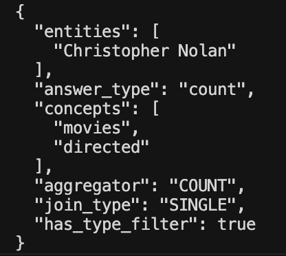
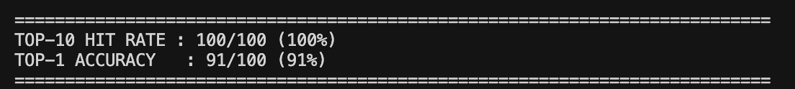

Coding Week 4
June 15 to June 21, 2026
Week 3 ended with the Ontology Explorer and Schema Introspector nodes integrated into production. This week the focus shifted to the Query Builder and Query Executor nodes, which are the two most directly responsible for the quality of generated SPARQL. I also revisited the ontology index again after a slack group discussion with my mentors that revealed a gap in my dbp property coverage.
Enriching the Planner Output
The Query Builder's job is to generate a SPARQL query using the information from all the previous nodes. However the Planner node is especially important for the Query Builder since it does the entire analysis of the natural language question. The Planner was previously returning three fields: entities, answer_type, and concepts. That was enough to generate simple queries but not sufficient for more complex ones involving aggregation, multi-entity joins, or type constraints.
I added three new fields to the Planner output. The aggregator field captures what kind of mathematical operation the question needs. COUNT for "how many", SUM for totals, ORDER_BY_DESC for "top N" rankings, GROUP_BY for grouped counts, or NONE for plain SELECT queries. The join_type field captures whether two entities in the question share something in common (INTERSECTION), relate to either entity separately (UNION), or the question involves a single entity (SINGLE). The has_type_filter field is a boolean that signals whether the question asks about a specific category like "which movies" or "list the companies", which tells the Query Builder to add an rdf:type constraint.
These three fields directly address failure patterns observed in some of our tests on DB25 and DB26 datasets. Questions like "How many movies did Nolan direct?" previously generated plain SELECT queries. With aggregator=COUNT the Query Builder now generates SELECT DISTINCT COUNT correctly. Questions like "Where were JK Rowling and Sarami born?" previously generated UNION patterns when they should use an intersection pattern instead.

Separating Classes from Properties in Context
The Ontology Explorer returns a ranked list of candidates that mixes OWL Classes like dbo:Actor and OWL Properties like dbo:starring together. Previously these were formatted as a flat list and sent to the Query Builder, which sometimes used a Class as a predicate or a Property in an rdf:type position.
I updated the context formatting to separate the results into two clearly labelled sections. Properties appear under a section that instructs the Query Builder to use them as predicates. Classes appear under a separate section that instructs it to use them only for rdf:type constraints and never as predicates. Each Property entry also shows its rdfs:domain and rdfs:range from the Schema Introspector, so the Query Builder sees structured information about what types go on the left and right side of each triple.
Improving the SYSTEM_PROMPT
The Query Builder's SYSTEM_PROMPT received a big update to match what the Planner now provides. The updated prompt has explicit rules for each aggregator type explaining exactly what SPARQL syntax to use. It has rules for join type where INTERSECTION means a shared variable pattern and UNION means separate branches. It has triple direction guidance that tells the Query Builder to use rdfs:domain and rdfs:range to determine which entity goes on the left as the subject and which goes on the right as the object. It also has a multi-entity rule that explains the difference between AND and OR in natural language and how they map to INTERSECTION and UNION in SPARQL.
Cleaning Up the Query Executor
The Query Executor, as the name suggests handles what happens after the SPARQL query gets generated. It hits our local Oxigraph instance to get results, and also has fallback mechanisms in place if it returns zero results. The original approach asked the LLM to try a dbo to dbp namespace swap as one of its revision strategies. This was unreliable because the LLM sometimes skipped the swap or applied it incorrectly.
I replaced this with a deterministic Python step. After the first execution fails, the Executor now runs a simple string replacement swapping every http://dbpedia.org/ontology/ to http://dbpedia.org/property/ before attempting LLM revision. This is guaranteed to happen correctly every time. The LLM revision prompt was also updated to remove the swap instruction since it is now handled deterministically, which keeps the LLM focused on genuinely complex fixes like removing rdf:type constraints or trying synonym predicates rather than wasting a revision attempt on something basic Python can do.
Revisiting the Ontology Index
After a Slack project group discussion with my mentors this week, they pointed out that our index was missing dbp properties due to coverage gaps in the data sources we were using. The original index used the DBpedia NT file for dbo entries and a word2vec file for unique dbp entries. I switched the dbo source to the OWL file which has 3,818 entries versus the NT file's 3,572 and richer label coverage. For dbp properties I needed a better source that could provide the full set of available predicates.
The first major challenge was the DBpedia SPARQL endpoint itself. Querying all dbp properties using a straightforward ?p a rdf:Property filter only returned around 1,780 results due to how Virtuoso handles the query internally. Broader queries using [] ?p [] to scan actual data triples triggered a silent failure from the endpoint, returning empty results without any error. After some investigation I found that anchoring the query to owl:Thing entities allows Virtuoso to use its internal subject-type index instead of scanning the entire graph, which prevents the timeout. The resulting query successfully returned dbp properties from actual usage rather than just those formally typed in the schema.
After just overcoming that, I was instantly hit by the 10,000 row limit the DBpedia SPARQL endpoint enforces per response. Running the query with a higher limit returned fewer results than expected because the endpoint was silently truncating/failing. The workaround was to run two paginated requests and save the results as local RDF files rather than hitting the endpoint at index build time. This made the build process finally reliable and reproducible.
After combining both files, filtering out dbo equivalents from the obtained dbp's, URL-encoded names, single-character abbreviations, and names starting with digits, the combined index grew to 16,131 entries.
Once I had built the index with the new combined dbo dbp results and was testing out the retrieval mechanism I immediately noticed index dilution. With significantly more dbp entries in the index than before, the top-5 retrieval was returning fewer relevant candidates per concept since the search space had grown. Running the DB25 benchmark confirmed this. Several properties that previously appeared at rank 4 or 5 were now falling outside the top-5 cutoff. The fix was straightforward. Increasing the default top-k from 5 to 10 in the ontology lookup function. With top-10, DB25 hit rate improved to 100/100 and DB26 maintained at 50/50.

The results were promising but the dbp properties obtained from the endpoint were just the most commonly used ones. Thousands of other dbp properties were entirely missing from the embedding index. During the Friday meeting my mentors confirmed that the full set of unique dbp properties is closer to 56k, verified through a count query on the DBpedia endpoint itself. Since fetching 56k properties reliably from the live endpoint is not feasible due to the timeout and truncation issues described above, my mentors advised using the complete DBpedia Databus infobox dump as a more reliable source. Improving the embedding quality for abbreviated properties like dbp:ot where the label alone gives no semantic signal is an active area of exploration going into next week.
What's Next
Week 5 will focus on two parallel tracks. The first is the LangGraph transformation, wiring all existing nodes into a proper StateGraph with typed state and conditional edges. The Validator node will be built alongside this since it depends on LangGraph's conditional routing to intelligently send failed queries back to the right upstream node depending on the failure type.
The second track is continuing the ontology index work. This involves processing the full 56k dbp properties from the Databus infobox dump and exploring strategies for better label enrichment, particularly for abbreviated and not so easily understood property names where the raw label gives no semantic signal to the embedding model.